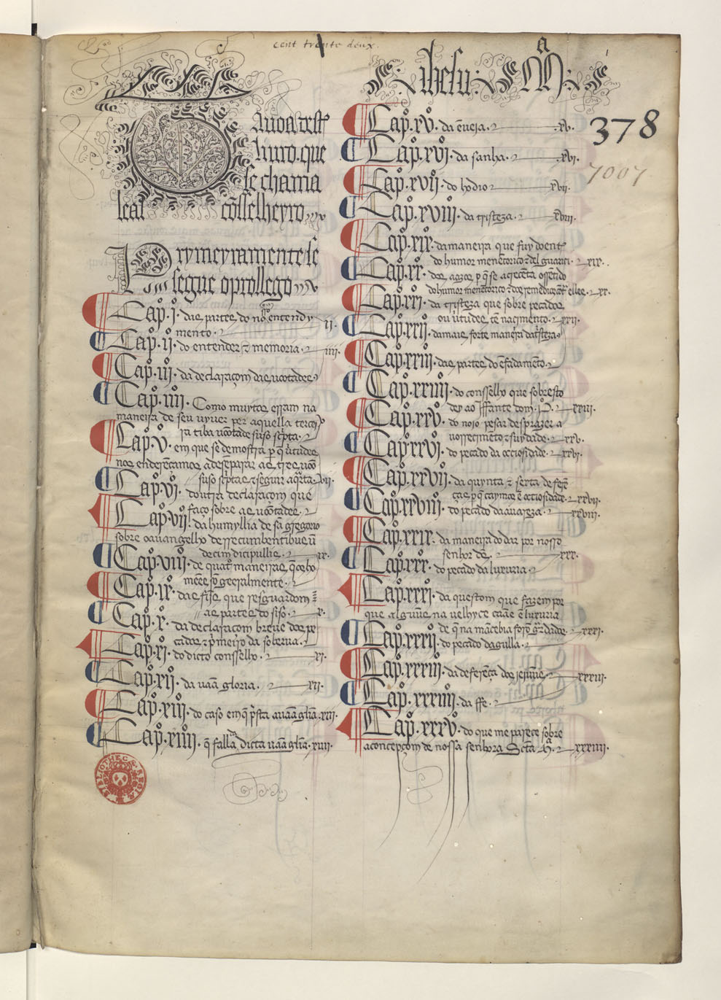
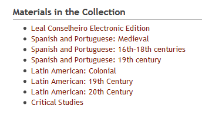
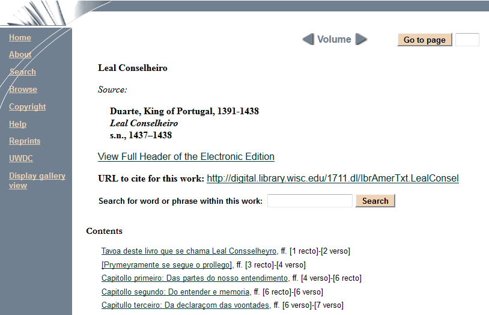
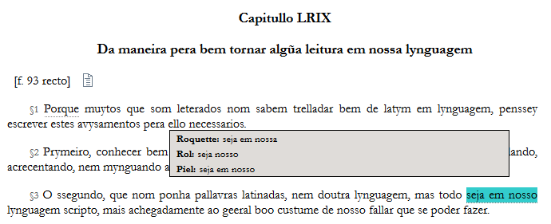

Leal Conselheiro Electronic Edition
Table of Contents
Abstract
The paper reviews the Leal Conselheiro Electronic Edition, the first digital edition of the medieval text Leal Conselheiro, a moral treatise authored by king Edward I of Portugal. The goal of the research project behind the edition, a co-operation between the University of Lisbon and the University of Wisconsin-Madison, is to offer a scholarly, critical, and practically useful text in digital form. The review argues that the resulting digital edition is built upon solid methodological grounds, i.a. by integrating previous editorial work and resorting to the TEI standard for encoding, but that it misses to make its achievements accessible and usable in the desired way, first of all by holding back the underlying basic data and because of a presentation that is sometimes confusing and does not tap the full potential of a digital edition.
Einordnung und Relevanz des Werkes
Der Leal Conselheiro (‘Loyaler Ratgeber’) ist ein moralisches Traktat, das von König Eduard I. (Dom Duarte, 1391-1438) in portugiesischer Sprache verfasst und zwischen 1437 und 1438 fertiggestellt wurde. Das Königin Eleonore von Aragonien gewidmete, 103 Kapitel umfassende Werk verbindet persönliche Reflexionen des Regenten mit theoretischen und praktischen Überlegungen zu Moral und Philosophie. Es gibt sich als ‘ABC der Loyalität’ (Duarte 2012 [Prymeyramente se segue o prollego] §16, trans. Henny) für die Mitglieder des Hofes aus, das die den Menschen innewohnenden Mächte und die sie bewegenden Leidenschaften aufzeigt, die Vorzüge einer tugendhaften Lebensweise herleitet sowie Wege vermittelt, um eine solche zu erreichen, Versuchungen zu widerstehen und Sünden zu überwinden.

Neben den angeführten externen Relevanzkriterien ist die Sprache einer der textinternen Aspekte, die die Bedeutung einer Edition der Duartschen Werke erkennen lassen. Einerseits ist der Leal Conselheiro durch einen latinisierenden Stil geprägt, was der Übernahme übersetzter Passagen aus Werken antiker und mittelalterlicher Autoren wie Cicero, Cassian, Gregorius I. oder Thomas von Aquin geschuldet sein mag, andererseits legt Duarte weniger Wert auf die stilistische Ausarbeitung seines Textes als auf die Vermittlung von Konzepten und Ideen sowohl theoretisch-abstrakter als auch konkreter und introspektiver Art, was zu einem kreativen und innovativen, aber auch noch unsicheren Umgang mit der portugiesischen Sprache führt. Auf diese Weise seien mit dem Leal Conselheiro die nötigen Ausdrucksmittel geschaffen worden, um abstrakte, moralphilosophische und politische Konzepte im Portugiesischen ausdrücken zu können (Duarte 1942 XIV-XV; Gama Caeiro 407-408). Nicht zuletzt ist das Werk durch die Art seiner intertextuellen Bezüge und den Umgang mit ihnen für die Philosophie- und Religionsgeschichte sowie die romanische und mittel- und neulateinische Philologie von Interesse.
Überlieferung und Editionen
Der Text ist nur in einer Handschrift in der Französischen Nationalbibliothek vollständig überliefert. Sie enthält neben dem Leal Conselheiro noch ein weiteres Werk aus der Feder Dom Duartes - eine Reitlehre mit dem Titel Livro da Ensinança de Bem Cavalgar Toda Sela. Das Manuskript, von dem vermutlich keine Kopien angefertigt wurden und dessen Weg in die Bibliothèque nationale nicht völlig geklärt ist, blieb bis ins 19. Jahrhundert hinein unbekannt und bildete nach seiner Entdeckung im Jahr 1820 die Grundlage für einige gedruckte Editionen. Hier sind insbesondere die beiden ersten, fast zeitgleich erschienenen Editionen von 1842 und 1843 zu nennen (Duarte 1842; Duarte 1843). Die erste, von Roquete herausgegebene Edition, ist aufwändig gestaltet und mit einem Vorwort und zahlreichen Anmerkungen versehen. Die Transkription enthält jedoch laut Joseph Maria Piel falsche Lesungen, Modernisierungen, Auslassungen einzelner Passagen und sei in der Vorgehensweise nicht immer konsistent. Die zweite, nach dem Verlag benannte ’Rollandiana’-Edition ist eher schlicht, aber bestrebt, der Handschrift treu zu folgen. Trotzdem sind Piel zufolge auch hier nicht alle Lesungen vertrauenswürdig, so dass die Mängel der beiden ersten Editionen zusammen mit dem Wunsch nach einer aktualisierten, kritischen Ausgabe zu der 1942 in Lissabon erschienenen Edition von Piel geführt haben (Duarte 1942 XXI-XXII). Die erste digitale Edition, die im Folgenden besprochen wird, ist im Rahmen des Projektes Leal Conselheiro Electronic Edition, einer Kooperation zwischen der Universidade de Lisboa (UL) und der University of Wisconsin-Madison (UW-Madison), entstanden und wurde 2012 publiziert (UWDCC 2012).
Das Projekt
Das auf portugiesischer Seite vom Hauptherausgeber João Dionísio und von Pedro Estácio koordinierte und in Madison von Paloma Celis Carbajal geleitete Projekt4 wurde von einer Reihe von Institutionen unterstützt (dem University of Wisconsin-Madison General Library System, der Biblioteca da Faculdade de Letras da Universidade de Lisboa, University of Wisconsin Digital Collections 5, University of Wisconsin-Madison Memorial Library 6, der Fundação Luso-Americana para o Desenvolvimento 7, den Latin American, Caribbean and Iberian Studies 8), die sich auf die Bereitstellung digitaler Ressourcen für didaktische und wissenschaftliche Zwecke konzentrieren und zur inhaltlichen Ausrichtung des Projektes sowie dessen Kooperationscharakter passen. Auf die Art der Unterstützung wird in der Projektbeschreibung (UWDCC 2012) nicht näher eingegangen.9 Neben der institutionellen Förderung verfügte das Projekt über umfangreiche personelle Ressourcen. Über den Herausgeber und die Koordinatoren hinaus waren sieben Mitarbeiter zur TEI-Codierung10 aus Madison und Lissabon beteiligt; drei auf digitale Methoden spezialisierte Bibliothekare der UW-Madison, die technische Lösungen entwickelt haben; ein Ansprechpartner an der Nationalbibliothek in Paris; eine Reihe von Wissenschaftlern der ‘Klassischen’ und der Neuen Universität Lissabon (UNL) und eine Professorin der UW-Madison,11 die für das Zustandekommen der Kooperation, die weitere Projektplanung und rechtliche Fragen verantwortlich zeichnen. Jedoch geht auch hier aus der Projektbeschreibung nicht klar hervor, welche Mitarbeiter hauptamtlich im Projekt beschäftigt waren bzw. sind.
Die bisher auf den Seiten der UW-Madison bereitgestellte Edition umfasst zwei Teilpublikationen: Den edierten Text (Duarte 2012) und eine Einleitung des Herausgebers in portugiesischer und englischer Sprache (Dionísio). Auf den Seiten des Zentrums für Sprachwissenschaft der Universität Lissabon (CLUL) ist herauszufinden, dass das Projekt auf weit mehr zielt als das, was bisher präsentiert wird: Neben der kritischen Edition soll auch eine dokumentarische Edition des Leal Conselheiro erarbeitet werden. Darüber hinaus sollen weitere Textzeugen aus dem Mittelalter und der Renaissance, durch die Teile des Werkes überliefert sind, auf mehreren Stufen ediert werden: ‘including a critical establishment, a documentary edition and a digitized representation’.12 Schließlich soll durch die Transkription der von Dom Duarte verwendeten Quellen und von Texten, auf die der loyale Ratgeber Einfluss genommen hat, eine Kontextualisierung geleistet werden. Da diese weitergehenden Informationen bzw. Ziele des Projektes jedoch bisher nicht Bestandteil der bei der UW-Madison publizierten digitalen Edition sind und dort nicht beschrieben werden, sollen sie nur als Hintergrund zur hier rezensierten (Teil-)Edition dienen.
Ziele und Methoden
Die Ziele und Methoden der Edition sind über die Projektbeschreibung hinaus in knapper Form auch in den Metadaten13 dargestellt, die als Teil der Edition präsentiert werden. Vor allem aber werden sie in der Einleitung von João Dionísio thematisiert. In der Projektbeschreibung wird allgemein festgestellt: ‘The main goal of this project is to host an electronic critical edition of the Portuguese medieval text Leal Conselheiro to be used by scholars and university students’ (UWDCC 2012). Wesentlich ist hier also, dass es sich um eine – die erste – digitale Edition handelt, dass sie wissenschaftlich aufbereitet – also kritisch – ist, den Anforderungen einer bestimmten Zielgruppe – nämlich Studenten und Wissenschaftlern – genügt und von diesen tatsächlich genutzt werden soll. Der Herausgeber setzt sich zum Ziel, nicht ein starres, erhabenes Monument zu schaffen, sondern eine dynamische, sich entfaltende und rezipientennahe Repräsentation des Textes zu gestalten, die auch Rückkopplungen nicht ausschließt:
‘The edition is to be viewed as a work in progress since it will be updated on a regular basis according to new contributions from members of the team. Furthermore, the edition will stimulate interaction between the user and the displayed content. Users are welcome to suggest corrections on whatever aspect of the edition, and their contribution, when accepted, will be duly credited.’ (UWDCC 2012)
Diese Sichtweise kommt der Definition einer digitalen Edition entgegen, die nicht einfach eine Digitalisierung gedruckter Editionen oder eine Publikation im digitalen Medium meint, sondern einen Paradigmenwechsel impliziert, der eine veränderte Methodologie zur Folge hat. Der Herausgeber bringt die methodische Herangehensweise aber nicht mit dem Übergang zu neuen Medien und den daraus resultierenden erweiterten Möglichkeiten in Verbindung, sondern begründet diese literaturtheoretisch. So verweist er auf die Critique Génétique als eine der editorischen Schulen, die den ‘Text im Werden’ (an)erkannt haben. Zugleich erklärt er, dass literarische Texte nicht als das Ergebnis des alleinigen Handelns eines zentralen Autors angesehen werden können. Auf die Entstehung einer wissenschaftlichen Edition übertragen, liegt die Entscheidung für eine kooperativ angelegte Vorgehensweise und einen ‘fluiden Text’ nahe (Dionísio).
Werkverständnis
Die im weiteren Verlauf der Einleitung dargelegten editorischen Prinzipien und Methoden und insbesondere die Beschreibung der konkreten Bestandteile der vorliegenden Edition lassen den Verweis auf die genetische Textkritik zunächst in einem diffusen Licht erscheinen: Die Basis für die Transkription bildet die 1942 von Joseph Piel herausgegebene Conselheiro-Edition, die mit leichten Veränderungen übernommen wird. Piel wollte vor allem eine verlässliche, Willkürlichkeiten und Fehler seiner Vorgänger vermeidende, gut benutzbare, an ein breites Publikum gerichtete Edition bieten, die nicht an paläografischen Feinheiten interessiert war, sondern auf die Feststellung des Textsinnes zielte (Duarte 1942 XXIIff.). Im Ergebnis umfasst die vorliegende elektronische Edition einen edierten Text mit Anmerkungen zu Orts- und Personennamen und mit einem kritischen Apparat, der die wichtigsten Lesarten vorangegangener Editionen berücksichtigt, sowie ein Faksimile des als Leithandschrift dienenden Pariser Manuskripts, das mit dem edierten Text verknüpft ist (Duarte 2012). Auf den Entstehungsprozess des Textes wird nicht weiter eingegangen und die Tatsache, dass Teile bzw. einzelne Kapitel des Leal Conselheiro über das Manuscrit Portugais 5 14 hinaus auch durch das sogenannte Livro da Cartuxa 15 überliefert sind und aus dem Livro de cavalgar toda sela stammen, findet keine Erwähnung. Die Entscheidung, nur den Leal Conselheiro, nicht jedoch das auf derselben Handschrift befindliche Livro de Cavalgar zu edieren, wird nicht begründet, so dass anzunehmen ist, dass man hier den Gründen Piels folgt.16
Unter Berücksichtigung der auf der Webseite des CLUL beschriebenen weiteren, geplanten Bestandteile des Editionsprojektes – eine dokumentarische Edition, Textvorstufen, Quellen und das Werk rezipierende Texte – erscheint der Verweis auf die genetische Textkritik in einem anderen Licht, wobei der Einbezug der Textrezeption auffällt. Der Eindruck wird bestätigt, wenn man die Ausführungen des Herausgebers zur vorliegenden Edition für sich genommen betrachtet. Sie legen nahe, dass der Prozessbegriff sich hier vor allem auf die Überlieferung bezieht, wenn betont wird, dass das Projekt einer langen editorischen Tradition folgt und hier nicht alles von Grund auf neu gemacht, sondern auf den Vorarbeiten anderer, insbesondere Joseph Piels, aufgebaut wird (Dionísio). Als Vorbild wird die Edition der religiösen Traktate Cassians genannt, die Gottfried Kreuz in enger Anlehnung an eine vorausgegangene Ausgabe angefertigt hat. Es wird weiter am ‘Haus des Textes’ gebaut, indem frühere Lesarten in den bisher umfassendsten Apparat17 integriert werden, typografische Fehler und Missdeutungen dagegen nicht berücksichtigt werden (sofern sie nicht vom jeweiligen Herausgeber intendiert waren und dessen Perspektive begründeten). Trotzdem sei auch diese Etablierung eines kritischen, verlässlichen Textes nicht perfekt und könne durch zukünftige Beiträge der Projektmitarbeiter und Leser noch verbessert werden (Dionísio).
Der Gedanke der schrittweisen, in gemeinsamer Anstrengung zu erreichenden Perfektionierung des Editionstextes deutet auf die Vorstellung eines – unerreichbaren? – finalen Editionstextes hin. Er entspricht aber durchaus der textgenetischen Auffassung von der zeitlichen Dimension ‘du devenir-texte, en posant pour hypothèse que l’œuvre, dans sa perfection finale, reste l’effet de ses métamorphoses et contient la mémoire de sa propre genèse’ (Biasi), wobei die Grenze des mehr oder weniger definitiven Zustandes, den der Text als Ergebnis der fortschreitenden Ausarbeitung durch den Autor bzw. in diesem Fall den Editor erreicht, sich hier weit nach hinten verschoben oder vielmehr aufgelöst hat.
Die vorliegende Edition ist somit eine Stufe (in zeitlicher Perspektive und auf dem Weg der fortschreitenden, kumulativen Vervollkommnung), ein Ausdruck (eine für sich stehende, perspektivierte Konstitution des Textes) und eine Facette (ein Ausschnitt in der Breite der möglichen Aspekte und Materialien, die in eine Edition einfließen könnten) des Gesamtwerkes Leal Conselheiro. Obwohl der Herausgeber dies nicht direkt thematisiert, scheint hier ein Spannungsverhältnis auf: Die Edition wird als in sich geschlossener Teil einer Gesamtentwicklung verstanden, dessen Grenzen zugleich zu verschwimmen drohen. Digitale Editionen erlauben gegenüber gedruckten Ausgaben eine ständige Weiterentwicklung in Form einer Überarbeitung, Ausweitung und Variation der zu präsentierenden Auswahl. In diesem Zusammenhang wäre es z.B. interessant zu erfahren, ob die geplante dokumentarische Edition in dieselben Grunddaten integriert und aus derselben zugrundeliegenden Repräsentationsform abgeleitet werden soll wie die hier vorgestellte kritische Ausgabe, und wie weitere Bearbeitungsstufen praktisch festgehalten würden.
Textbegriff und Textbehandlung
Im Gegensatz zum Werkbegriff wird das Textverständnis vom Herausgeber nicht explizit in einen theoretischen und methodischen Kontext eingeordnet. Es ergibt sich zum einen aus den Vorarbeiten von Joseph Piel und zum anderen aus der angestrebten Funktion der Edition als Grundlage für studentische und wissenschaftliche Arbeiten zum und mit dem Text.
Piel möchte einen in dem Sinne authentischen Text bieten, dass Charakteristika und Besonderheiten von Texten des 15. Jahrhunderts erhalten bleiben sollen. Sein Ziel ist dabei aber nicht Authentizität als Materialtreue. Er möchte einen Editionstext erarbeiten, der den Anforderungen einer modernen, literarischen Kritik genügt, also nah an der Handschrift bleibt, zugleich aber die Arbeit mit dem Text und das Verständnis desselben nicht durch übermäßige Quellentreue erschwert (Duarte 1942 XXII-XXIII). Die von ihm intendierten Nutzer sind eher an einer inhaltlichen Kritik als an einer sprachwissenschaftlichen Analyse des Textes interessiert. Wenn er bei der Transkription ein bestimmtes Sprachverständnis zugrundelegt, dann ein abstraktes, semantisch ausgerichtetes und lautsystemisches, während ein schriftsystemisches allenfalls nachgeordnet ist.
Zum Beispiel werden im Falle von Formen, bei denen die Aussprache und dadurch die Erschließung des Sinns zweifelhaft sind, Akzentzeichen verwendet. In Formen wie mareãtes, tẽpo wird die Tilde durch Nasale ersetzt (mareantes, tempo), wenn angenommen wird, dass sie diese Konsonanten repräsentiert. Ist dies nicht der Fall, steht die Tilde also für einen nasalisierten Vokal, wird die im Manuskript präferierte Schreibung übernommen bzw. angepasst, z.B. bei cõvem → convem. Auch der Umgang mit u/v und i/j spiegelt den Vorrang der phonologischen vor der graphischen Ebene wider, wenn v und j bei konsonantischem Wert und u und i bei vokalischem Wert gesetzt werden. Zur Förderung der Lesbarkeit werden Proklitika vom Wortstamm getrennt, so dass beispielsweise oqual als o qual transkribiert wird. Eigennamen werden großgeschrieben, Abkürzungen stillschweigend aufgelöst, Absatzzeichen übernommen, wo angemessen, aber verändert, und die Satzzeichen werden stark angepasst, um das Verständnis des Textes zu erleichtern (Duarte 1942 XXIIIff.).
Die vorliegende Edition des Leal Conselheiro folgt diesem Umgang mit dem Text weitestgehend.18 Im Unterschied zu Piel werden darüber hinausgehende editorische Eingriffe in der Darstellung nicht durch besondere editorische Zeichen markiert, sondern durch eine dezente Unterstreichung angedeutet, die auf eine Anmerkung verweist (Dionísio). Auf diese Weise werden die Vorteile einer digitalen Präsentation genutzt, die es erlaubt, den Text auf der Zeichenebene frei von Eingriffen zu halten. Die dahinterstehende Zielstellung wird die Darbietung einer konsolidierten Lesefassung sein, deren Fundierung über zusätzliche Anmerkungen transparent gemacht wird.
Während Piel jedoch durch den vom Medium Buch gesteckten Rahmen darauf angewiesen war, sich für eine Fassung und eine Form der Darstellung zu entscheiden und den Text nicht zu überfrachten, hätte die vorliegende, digitale Edition weiter gehen und sämtliche Eingriffe nachvollziehbar machen können. Digitale Editionen bieten verschiedene Möglichkeiten, eine Überladung des Textes zu vermeiden. Dazu zählen z.B. das Ein- und Ausblenden von Emendationen, Normierungen, Modernisierungen und Anmerkungen oder das Angebot verschiedener Textfassungen. Sicher hätte eine stärkere Annäherung an die Quelle und eine genaue Codierung editorischer Maßnahmen mehr zeitliche und personelle Ressourcen erfordert als die gewählte Vorgehensweise. Letztlich bleibt jedoch offen, warum auf einen pluralistischen Ansatz verzichtet wird19 und welche fachwissenschaftlichen Fragestellungen im Einzelnen durch die Edition unterstützt werden sollen.
Datenmodell
Die hier besprochene Leal Conselheiro-Edition ist Teil der Reihe Ibero-American Electronic Text Series, mit der die UW-Madison geisteswissenschaftliche Werke aus dem iberischen und lateinamerikanischen Raum in digitaler Form herausgibt (UWDCC 2011a). Die Reihe umfasst bisher 44 Werke, deren zeitliche Spanne vom Mittelalter bis ins 20. Jahrhundert reicht, wobei die meisten jedoch aus dem 16. bis 18. Jahrhundert stammen. Die Grundlage der elektronischen Ausgaben bildet ein von der UW-Madison entwickeltes Datenmodell, das auf TEI-P420 basiert und verschiedene Bearbeitungsstufen unterscheidet: ein E-Facsimile Level, bei dem nur Faksimiles und Metadaten bereitgestellt werden; ein Reading Level zur Unterstützung von grundlegenden Lese- und Retrievalprozessen, Browsing und Navigation; ein Pedagogical Level mit zusätzlichen Anzeige- und Abfragefunktionalitäten sowie ein Scholarly Level. Letzteres ist durch die Bedürfnisse des Wissenschaftlers bestimmt, bietet den größten Freiraum und wird deshalb in der Dokumentation des Datenmodells nicht allgemein beschrieben. Es wird allerdings empfohlen, beim Scholarly Level auf den anderen Modellebenen aufzubauen. Dadurch soll auch bei fortgeschrittenen Erschließungen gewährleistet werden, dass die von der Bibliothek entwickelten Präsentations- und Nutzungsformen ohne großen zusätzlichen Entwicklungsaufwand genutzt werden können und dass dem Nutzer der Reihe eine konsistente Umgebung geboten wird (UWDCC 2007). Obwohl mit der Ibero-American Electronic Text Series ein breites Angebot angestrebt ist und die Texte hauptsächlich auf dem Reading Level codiert sind, soll die Möglichkeit der vertieften wissenschaftlichen Erschließung bestehen:
‘The motivation for creating these guidelines is a desire to create a consistent and scalable infrastructure for text encoding projects, whereby new works can be created and added to the collection with minimal development effort on the part of project leaders, text encoders, and technical staff. At the same time, text encoded according to these guidelines should provide a suitable base for further elaboration or expansion by future encoders with minimal restructuring.’ (UWDCC 2007).
Unklar ist, wie eine solche gestaffelte Erschließung praktisch umgesetzt würde, ob zusätzliche Codierungsebenen in dieselben Dateien integriert oder separat erarbeitet würden. Die Edition des Leal Conselheiro ist von vornherein auf dem Scholarly Level codiert. Der Anspruch, eine wissenschaftlichen Kriterien genügende kritische Edition zu erarbeiten, ist jedoch innerhalb der Reihe, die ansonsten eher als digitale Bibliothek denn als Sammlung digitaler Editionen anzusehen ist, noch ein Sonderfall, der bei der Präsentation der Sammlungsinhalte hervorgehoben wird.

Im Falle der digitalen Leal Conselheiro-Edition stehen diese jedoch leider nicht frei zur Verfügung. Frei zugänglich ist nur der Volltext der Edition, der jedoch ausschließlich über die HTML-Präsentation erreichbar ist und nicht als vollständiger Download oder über eine Schnittstelle zur Verfügung steht. Die Rechte am Markup liegen bei der UW-Madison. Da die Dokumentation des Datenmodells nicht über die allgemeinen, von der Universität erarbeiteten Richtlinien für die Auszeichnung elektronischer Texte in TEI hinausgeht und das XML nicht einsehbar ist, muss sich die Rezension auf die im Web präsentierte Fassung stützen.
Präsentation der Inhalte
Die Präsentation fügt sich strukturell und optisch in das Gesamtbild der digitalen Sammlungen der UW-Madison ein. Ausgangspunkt ist die allgemeine Projektbeschreibung (UWDCC 2012), zu der man von der Seite der Ibero-American Electronic Text Series aus gelangt. Von hier aus geht es über einen Link weiter zur eigentlichen Edition, die mit einer bibliographischen Angabe, einem Link zur HTML-Ausgabe des TEI-Headers, einem Zitierhinweis, einem Volltextsuchfeld und dem Inhaltsverzeichnis über die einzelnen Kapitel des Leal Conselheiro eröffnet wird und am linken und unteren Seitenrand Navigationselemente bietet. Die Zusammenstellung der Materialien bzw. Browsingzugänge auf dieser Einstiegsseite erscheint auf den ersten Blick etwas zusammengewürfelt.

Wünschenswert wäre stattdessen, direkt von der Projektbeschreibungsseite aus zu der Überblicksseite zu kommen, welche die beiden Verweise auf den Editionstext und auf die Einleitung des Herausgebers enthält. Noch besser wäre es, diese Zwischenebene wegzulassen und direkt von der Startseite des Projekts aus auf die beiden Editionsbestandteile zu verlinken.
Folgt man dem Link zur Einleitung, so präsentiert sich diese mit einem der Editionsstartseite entsprechenden Einstieg. Der Zitiervorschlag für die Einleitung führt im Gegensatz zu demjenigen des Editionstextes allerdings nicht auf die beide Teilpublikationen umfassende Überblicksseite, sondern verweist – wie zu erwarten – auf die Einleitung selbst. Das bedeutet, dass von hier aus kein direkter Weg zurück zur Projektbeschreibung führt und der einzige Weg zurück zum Editionstext der Link zum vorhergehenden ‘Volume’ ist, wenn man vom Zurück-Button des Browsers absieht, der nur beim hier gewählten Weg durch die einzelnen Seiten der Präsentation zielführend ist.
Diese äußerst unvorteilhafte hypertextuelle Vernetzung der Editionsbestandteile ist unter anderem auf die Entscheidung zurückzuführen, die Einleitung und den Editionstext als zwei getrennte Publikationen zu veröffentlichen, die jedoch trotzdem eine übergeordnete Einheit bilden, welche sich aber nicht ohne Weiteres in die Struktur der digitalen Sammlungen der UW-Madison integrieren lässt. In dieser Hinsicht wäre eine eigenständige Präsentationsumgebung vorteilhaft gewesen.
Mehrere Wege führen zu den Inhalten der Edition: Ein Inhaltsverzeichnis listet die einzelnen Kapitel auf, die über Links direkt erreichbar sind. Über ein einfaches Eingabefeld kann nach Begriffen im Text gesucht werden. Nützlich sind erweiterte Funktionen wie die Verwendung logischer Verknüpfungen oder Trunkierung, letztere vor allem, um auch zu Begriffen variabler Schreibung alle Treffer zu erhalten. Noch mehr Funktionen als die einfache Volltextsuche auf der Ebene der Einzeledition bietet die erweiterte Suche auf der Ebene der Reihe, die über das linke allgemeine Menü erreicht werden kann. Sie erlaubt eine Suche über alle Titel hinweg, in Teilsammlungen oder einzelnen Titeln, wobei wahlweise im ganzen Werk, in Überschriften, in Metadaten oder Illustrationen gesucht werden kann. Darüber hinaus werden eine ‘Boolean Search’ und eine ‘Proximity Search’ angeboten. Über die ‘Gallery View’ können die einzelnen Abbildungen des Faksimiles gezielt angesteuert werden. Zu einzelnen Seiten gelangt man außerdem über ein ‘Go to page’-Feld, das je nach Kontext zu einer Abbildung oder dem Text führt.
Der Text wird an der Werkstruktur orientiert in einzelnen Kapiteln präsentiert, zwischen denen vor- und zurückgeblättert werden kann. Als zusätzliche strukturelle Einheiten auf einer niedrigeren Ebene sind Sinnabschnitte eingefügt, die fortlaufend nummeriert sind und deren Beginn im Text angezeigt wird. Die inhaltliche Struktur wird von der Seitenfolge der Pariser Handschrift überlappt, welche durch die Markierung der Seitenwechsel mit Angabe der Seitennummer und einem Link zum Bild der Seite ausgedrückt wird. Die digitalen Abbildungen liegen in guter Qualität vor.21
Durch eine dezente Unterstreichung werden Bezugswörter für Apparateinträge und Orts- und Personennamen hervorgehoben. Beim Überfahren mit der Maus werden sie farblich hinterlegt und die zusätzlichen Informationen eingeblendet. Der Apparat gibt abweichende Lesarten vorheriger Herausgeber in chronologischer Reihenfolge wieder und kann zusätzliche Anmerkungen enthalten. Für Orts- und Personennamen werden eine normalisierte Form in portugiesischer und eine standardisierte Form in englischer Sprache angegeben. Identifikation und Normalisierung basieren auf den Normdateien der Library of Congress 22 und der Portugiesischen Nationalbibliothek23 sowie RAMEAU24, das unter anderem von der Französischen Nationalbibliothek verwendet wird (Dionísio).
Abgesehen davon, dass die Spaltenbreite sich an die Größe des Browserfensters anpasst und somit unter Umständen zu groß wird, ist der Editionstext übersichtlich präsentiert. Die Verwendung einer Serifenschrift, die in der gesamten Reihe zur Anwendung kommt, deutet den Charakter eines Druckerzeugnisses bzw. im vorliegenden Fall eines Manuskripts an. Durch ausreichende Abstände zwischen Zeilen und Abschnitten bleibt der Text trotzdem gut lesbar.

Zusammenfassend ist zu sagen, dass die Webpräsentation zwar grundlegende Funktionen erfüllt und das Material durch Such- und Blätterfunktionen innerhalb einer hypertextuellen Struktur insgesamt gut zugänglich gemacht wird, dass sie jedoch durch die Einbettung in ein allgemeines Framework gelegentlich eingeschränkt wird und einige Schwachstellen in der Benutzerführung und bei der Darstellung der Inhalte aufweist. Sowohl aus inhaltlicher Sicht als auch im Hinblick auf die Benutzbarkeit sind zudem weitere Editionsbestandteile denkbar. Dazu zählen Register der Orts- und Personennamen, die vermutlich mit geringem Aufwand aus den Grunddaten hätten generiert werden können. Auch eine Bibliografie, eine Kommentierung des Textes und nicht zuletzt eine Übersetzung wären wünschenswert. Dadurch, dass über den genauen Zeitrahmen, den Status des Vorhabens25 und die Haupt- oder Ehrenamtlichkeit der Mitarbeiter keine Informationen vorliegen, ist allerdings nicht zu beurteilen, ob dies innerhalb des Projektes hätte geleistet werden können. Außerdem ist dem Projekt zugutezuhalten, dass es die eigenen, realistisch abgesteckten Ziele erreicht, wenn es ein neues ‘Geschoss’ auf das ‘Fundament’ der Arbeiten vorheriger Herausgeber setzen möchte. Vorarbeiten, die die Grundlage für Erweiterungen der Editionsarbeit innerhalb der vorliegenden Leal Conselheiro-Edition bilden, werden sinnvoll integriert und erweitert. Es ist zu hoffen, dass ältere Editionen, die zum Teil eine umfangreiche Kommentierung und Kontextmaterialien einschließen, in Zukunft ebenfalls in digitaler Form verfügbar gemacht werden, so dass sie im Idealfall mit der vorliegenden Leal Conselheiro-Edition vernetzt werden könnten.
Technische Architektur
Über die hinter der Präsentation stehende technische Architektur liegen keine weiteren Informationen vor. Eine URL wie http://digicoll.library.wisc.edu/cgi-bin/IbrAmerTxt/IbrAmerTxt-idx?type=header&id=IbrAmerTxt.LealConsel&pview=hide mit dem Pfadbestandteil ‘cgi-bin’ und Parametern deutet auf die Verwendung von Skriptsprachen zur Generierung der HTML-Seiten hin. Ob die Seiten ‘on the fly’ aus den XML-Grunddaten generiert oder statisch ausgeliefert werden, ist nicht ersichtlich.
Zur Zitation zu verwendende URLs, die über einen Resolver auf die vom technischen System vorgegebenen Adressen abgebildet werden und für die anzunehmen ist, dass sie dauerhaft funktionsfähig bleiben, sind nur für die Projektbeschreibungsseite, den Editionstext und die Einleitung angegeben. Darüber hinaus wird die Adressierung von Teilen der Edition technisch nicht unterstützt. Auch auf einer logischen Ebene werden keine Empfehlungen zur Zitierung einzelner Kapitel und darunterliegender Abschnitte gemacht, obwohl die Nummerierung kleinerer inhaltlicher Passagen wohl diesem Zweck dient.
Die Edition wird ausschließlich über die grafische Benutzeroberfläche zur Verfügung gestellt. Darüber hinausgehende technische Schnittstellen oder Exportformate wie eine reine Textfassung oder ein PDF mit dem gesamten Editionstext werden nicht angeboten, wodurch die Nachnutzung der im Projekt erarbeiteten Inhalte erschwert wird. Auch beraubt sich die Edition hier einiger Vorteile, die der digitale Raum bietet. So ist die Bezugnahme auf anerkannte Normdateien bei der Erschließung erwähnter Personen und Orte ein wichtiger Schritt für eine Vernetzung des Textes innerhalb der weiteren Forschungslandschaft. Ohne entsprechende Schnittstellen, an denen diese Inhalte gesammelt und in maschinenlesbarer Form ausgeliefert werden, bleibt die Verknüpfung jedoch implizit.
Positiv hervorzuheben ist, dass die langfristige Sicherung und Verfügbarkeit der Editionsinhalte, der Präsentationsumgebung und der technischen Infrastruktur durch die institutionelle Beteiligung der Universitätsbibliothek Madison und die Einbindung des Leal Conselheiro in deren digitale Sammlungen gesichert sind. Durch die Entscheidung, die Edition in die Reihe Ibero American Text Series zu integrieren, in der der Leal Conselheiro auch thematisch sehr gut untergebracht ist, wird eine ‘Insellösung’ verhindert. Auch ist zu vermuten, dass der Entwicklungsaufwand auf diese Weise gering gehalten werden konnte. Eine solche pragmatische Herangehensweise wird, ebenso wie der Rückgriff auf Vorarbeiten bei der inhaltlichen Editionsarbeit, zur erfolgreichen Durchführung des Projektes beigetragen haben.26
Fazit
Es handelt sich bei der vom Projektteam um João Dionísio erarbeiteten Leal Conselheiro-Ausgabe zweifellos um eine digitale wissenschaftliche Edition. Die Zugänglichkeit des für mehrere historisch ausgerichtete Forschungszweige relevanten Gegenstandes wird durch die erstmalige Publikation im Web beträchtlich verbessert. Zugleich wird die Medialität vorhergehender Editionen transzendiert, indem ein in TEI-XML formuliertes Datenmodell verwendet wird, das als grundlegende Repräsentation fungiert. Zielstellungen und Vorgehensweisen sind insgesamt gut dokumentiert. Der Herausgeber positioniert sich theoretisch und methodisch und leitet die Auswahl des Materials27, die Orientierung an Vorgängern, die Editionsprinzipien, die Praktiken und angestrebten Ergebnisse aus diesen Reflexionen ab. Der Text wird kritisch konstituiert und tiefer erschlossen.
Als digitale Edition hätte der Leal Conselheiro jedoch mehr überzeugt, wenn die Möglichkeiten des Digitalen stärker ausgeschöpft worden wären. Dies betrifft zum Einen Aspekte, die inzwischen als grundsätzliche Anforderungen an eine gute, digitale Edition verstanden werden können, wie eine intuitive Benutzerführung, die Eröffnung mehrerer Zugänge zu den Inhalten und vor allem die Bereitstellung der Grunddaten in XML, was für eine stärkere Transparenz, Nachvollziehbarkeit und Nachnutzbarkeit sorgen würde.28 Ein weiterer ‘digitaler Vorzug’, den das Projekt sich zunutze machen könnte, ist die Möglichkeit verschiedener Präsentationsmodi. Bei einem Verzicht auf stillschweigende Eingriffe in den Text hätten diese zum Beispiel dafür genutzt werden können, eine quellennahe von einer Lesefassung zu unterscheiden, oder auch um deutlicher zu machen, an welchen Stellen die vorliegende Edition sich von den Lesungen vorheriger Herausgeber, insbesondere von Piel, unterscheidet. Auch über etablierte Verfahrensweisen hinaus hätte sich die Edition mit Gewinn neuen Ansätzen öffnen können. Schon auf einer theoretischen Ebene hätten die Überlegungen zum kooperativen Charakter der Textentstehung und der Offenheit und Nicht-Fixierung des Textes in den Kontext der digitalen Editorik eingeordnet werden können. Praktisch hätten sie sich durch eine klare Entscheidung für einen Crowdsourcing-Ansatz manifestieren können, wie es beispielsweise beim Martha Berry Digitale Archive 29 oder der Biblioteca Digital del Pensamiento Novohispano 30 umgesetzt worden ist.31 In der Präsentation hätte dies durch die Bereitstellung von Kommentarfunktionen oder anderen Bearbeitungsmöglichkeiten für Benutzer der Edition realisiert werden können.
Da das vorrangige Ziel der hier besprochenen Leal Conselheiro-Edition ist, eine für Wissenschaftler und Studenten gut zugängliche, gut benutzbare, digitale Ausgabe zu bieten, erscheint die Umsetzung vor allem im Hinblick auf die Datenbereitstellung und Präsentation etwas dürftig. Trotzdem ist mit der Überführung des Werkes in die digitale Welt ein sehr wichtiger Schritt getan und die Zukunftsfähigkeit, Erweiterbarkeit und Integrationsfähigkeit der Edition gesichert.
Bibliography
- Biasi, Pierre-Marc de. “MANUSCRITS. La critique génétique”. Encyclopædia Universalis. http://web.archive.org/web/20140506094255/http://www.universalis.fr/encyclopedie/manuscrits-la-critique-genetique/.
- Carvalhão Buescu, Maria Leonor. Literatura Portuguesa Medieval, Lissabon: Universidade Aberta, 1990.
- Coelho Muniz, Márcio Ricardo. “Espelho de conselheiros: um possível gênero da literatura política ibérica”. Floema. Caderno de Teoría de História Literária 2 (2005): 101-134.
- Coelho Muniz, Márcio Ricardo. “O leal conselheiro e a tradição do espelho de príncipe: considerações sobre o gênero.” Actas del IX Congreso Internacional de La Asociación Hispánica de Literatura Medieval. Eds. Mercedes Pampín Barral and Carmen M. Parrilla García. Noia: Toxosoutos, 2005. Vol. 2. 89-103.
- Dionísio, João. Leal Conselheiro: Introduction to the electronic edition / Leal Conselheiro: Introdução à edição electrónica. Madison, Wisconsin, 2011. http://web.archive.org/web/20140505152344/http://digicoll.library.wisc.edu/cgi-bin/IbrAmerTxt/IbrAmerTxt-idx?id=IbrAmerTxt.LealConselIntro.
- Duarte, Dom. Leal Conselheiro (1437-1438). Ed. João Dionísio. Madison, Wisconsin, 2012. http://web.archive.org/web/20140502113420/http://digicoll.library.wisc.edu/cgi-bin/IbrAmerTxt/IbrAmerTxt-idx?type=browse&scope=ibramertxt.lealconsel.
- Duarte, Dom. Leal Consselheiro, Livro da enssynança de bem cavalgar toda sela. 1401-1450. MS Bibliothèque nationale de France, Département des manuscrits, Portugais 5, Paris. Digitized version 2011. Accessed: 02.05.2014. http://gallica.bnf.fr/ark:/12148/btv1b60004002.
- Duarte, Dom. Leal Conselheiro o qual fez Dom Eduarte. Ed. Joseph M. Piel. Lissabon: Livraria Bertrand, 1942.
- Duarte, Dom. Leal Conselheiro […] seguido do Livro da Ensinança de bem cavalgar toda sella. Ed. José Inácio Roquete. Paris: Aillaud, 1854.
- Duarte, Dom. Leal Conselheiro e Livro da Ensinança de bem cavalgar toda sela, escritos pelo Senhor D. Duarte. Ed. Francisco António Campos. Lissabon: Typographia Rollandiana, 1843.
- Duarte, Dom. Leal Conselheiro […] seguido do Livro da Ensinança de bem cavalgar toda sella. Ed. José Inácio Roquete. Paris: Aillaud, 1842.
- Duarte, Dom. Livro da ensinança de bem cavalgar toda sela, que fez elrey Dom Eduarte. Edição crítica, acompanhada de notas e dum glossário. Ed. Joseph Piel. Lissabon: Livraria Bertrand, 1944.
- Duarte, Dom. Livro dos conselhos de el-rei D. Duarte: Livro da Cartuxa. Ed. João Jose Alves Dias. Lissabon: Estampa, 1982.
- Duarte, Dom. Livro dos Conselhos de D. Duarte. 15--?. MS Arquivo Nacional Torre do Tombo, Manuscritos da Livraria, n.° 1928, Lissabon. Digitized version. Accessed: 05.05.2014. http://digitarq.dgarq.gov.pt/details?id=4248785.
- Gama Caeiro, Francisco da. “Dom Duarte à luz da Cultura Portuguesa.” Revista Portuguesa de Filosofia 47.3 (1991): 407-424.
- Rossi, Guiseppe Carlo, Geschichte der portugiesischen Literatur. Tübingen: Niemeyer, 1964.
- University of Wisconsin Digital Collections Center (UWDCC). Leal Conselheiro Electronic Edition. Ibero-American Electronic Text Series. 2012. Accessed: 02.05.2014. http://digital.library.wisc.edu/1711.dl/IbrAmerTxt.LealConselheiro.
- University of Wisconsin Digital Collections Center (UWDCC). Ibero-American Electronic Text Series. 2011. Accessed: 06.05.2014. http://digital.library.wisc.edu/1711.dl/IbrAmerTxt.
- University of Wisconsin Digital Collections Center (UWDCC). University of Wisconsin Digital Collections. 2011. Accessed: 02.05.2014. http://uwdc.library.wisc.edu.
- University of Wisconsin Digital Collections Center (UWDCC). Guidelines for Markup of Electronic Texts. Ed. Peter C. Gorman. 2007. http://web.archive.org/web/20140506113447/http://uwdcc.library.wisc.edu/resources/etext/TEIGuidelines.shtml.
Notes
- Die sprachgeschichtliche Relevanz ergibt sich daraus, dass die Prosaformen andere sprachliche Phänomene transportieren als z.B. die frühe portugiesische Lyrik. ↑
- So genannt von Luis de Camões in den Lusiaden (Rossi 24). ↑
- Dom Duarte wird gar als ‘königlicher Philosoph’ und ‘hochbegabter Prinz’ bezeichnet, Epitheta, die jedoch aufgrund seiner fehlenden formalen Ausbildung und dem eher lockeren Sprachstil des Leal Conselheiro zurückgewiesen werden (Duarte 1942 XIV-XV). ↑
- Der Hauptherausgeber João Dionísio ist Professor für mittelalterliche portugiesische Literatur an der UL und hat neben dem Leal Conselheiro zwei Bände der englischen Gedichte Fernando Pessoas und das poetische Werk von M. S. Lourenço ediert. Aktuell arbeitet er an einer kritischen Edition des Frei Luís de Sousa von Almeida Garrett. Vgl. http://www.clul.ul.pt/en/researcher/113-joao-dionisio und http://web.archive.org/web/20140502160830/http://www.educ.fc.ul.pt/hyper/jdionisio.htm. Accessed: 02.05.2014. Pedro Estácio ist an der Bibliothek der Philosophischen Fakultät der Universität Lissabon beschäftigt und Paloma Celis Carbajal ist Bibliothekarin für Lateinamerikanische und Iberische Studien an der UW-Madison. ↑
- Ein Zentrum, das zum Ziel hat, digitale Ressourcen für Lehre und Forschung frei zugänglich zur Verfügung zu stellen. Voraussetzungen sind u.a., dass das Material noch nicht digital vorliegt und dass es von Wissenschaftlern und Studenten häufig nachgefragt wird (UWDCC 2011b). ↑
- Forschungsbibliothek für Geistes- und Sozialwissenschaften. Siehe http://memorial.library.wisc.edu/. Accessed: 05.05.2014. ↑
- Portugiesische Stiftung, die insbesondere Kooperationsprojekte zwischen Portugal und den Vereinigten Staaten von Amerika finanziell fördert. Siehe http://www.flad.pt/. Accessed: 05.05.2014. ↑
- LACIS (vgl. http://www.lacis.wisc.edu/. Accessed: 05.05.2014.), ein Programm der UW-Madison, das vor allem Konferenzen und Symposien fördert und Forschung mit Lateinamerikabezug finanziell unterstützt. ↑
- Auch Beginn und Dauer des Projektes werden an dieser Stelle nicht genannt. Auf der Webseite des Zentrums für Sprachwissenschaft der Universität Lissabon (CLUL), auf der das Projekt ebenfalls kurz beschrieben ist, erfährt man, dass es im Oktober 2008 begonnen hat. Vgl. http://www.clul.ul.pt/en/research-teams/301-leal-conselheiro. Accessed: 05.05.2014. ↑
- Der Datenstandard TEI wird von der gleichnamigen Text Encoding Initiative herausgegeben und weiterentwickelt und dient zur Codierung geisteswissenschaftlicher Texte, siehe http://web.archive.org/web/20140521124138/http://www.tei-c.org/index.xml. ↑
- Namentlich Prof. Ivo Castro (UL, Zentrum für Linguistik), Prof. António Emiliano (UNL), Prof. Susana Pedro (UL, Zentrum für Geschichte), Prof. Helana Buescu (UL), Prof. José Pedro Serra (UL) und Prof. Ellen Sapega (UW-Madison, Department of Spanish & Portuguese). ↑
- http://www.clul.ul.pt/en/research-teams/301-leal-conselheiro. Accessed: 05.05.2014. ↑
- In den TEI-Headern, insbesondere in der Encoding Description. ↑
- So die Signatur der Handschrift in der Französischen Nationalbibliothek. ↑
- Der Visconde de Santarém verweist in seiner Einleitung zur Edition von Roquete auf diese Handschrift, die ihren Namen einer Buchhandlung in Évora verdankt, in der sie aufgefunden wurde: ‘das muitas obras d’este Principe não existião em Portugal senão dez, as quaes se conservavão na Cartuxa d’Evora em um Mss., com o titulo de Memorias varias’ (Duarte 1854 VI). Im portugiesischen Nationalarchiv Torre do Tombo läuft sie unter dem Namen Livro dos Conselhos de D. Duarte (Duarte 15--?). Auch eine Edition liegt vor (Duarte 1982). Francisco da Gama Caeiro bezeichnet den LC als reifes Werk, in dem kleinere, aus verschiedenen Zeiten stammende Traktate verarbeitet seien (Gama Caeiro 411). ↑
- Für Piel handelt es sich beim Livro de Cavalgar um einen ‘Gegenstand anderer Art’, der von ihm 1944 in einer separaten Edition herausgegeben worden ist (Duarte 1944). ↑
- ’the apparatus we display is, so far, the most comprehensive of all editions of Leal Conselheiro, offering more information on the readings than any other edition’ (Dionísio). ↑
- Während die in der Einleitung genannten Editionsrichtlinien dem tatsächlichen Vorgehen entsprechen, werden im TEI-Header dazu in Widerspruch stehende Angaben gemacht: ‘The transcription duplicates the capitalization and punctuation of the original document.’ (Duarte 2012). ↑
- Obwohl die Berücksichtigung der auf der CLUL-Webseite angekündigten dokumentarischen Edition auch an dieser Stelle die Hintergründe erhellt – es sind also doch weitere Ansätze angedacht. Dabei bleibt die Frage, ob die verschiedenen Fassungen aus denselben Grunddaten hergeleitet werden sollen – was sich bei einer digitalen Edition auf jeden Fall anbieten würde – oder nicht. ↑
- TEI-P4 ist die Vorgängerversion des aktuell in der Version P5 vorliegenden Datenstandards TEI. ↑
- Die Digitalisate wurden von der Französischen Nationalbibliothek bereitgestellt und sind dort ebenfalls online zugänglich (Duarte 2011). Die digitalen Abbildungen, die im JPEG-Format präsentiert werden, sind rund 1020x1550px groß, was bei den Manuskriptmaßen 282x405mm eine Auflösung von 72 ppi ergibt. Über die Farbtiefe liegen keine Informationen vor. ↑
- Library of Congress Authorities, siehe http://authorities.loc.gov/. Accessed 06.05.2014. ↑
- Bases de Dados de Autoridades – Pessoa Física. Der von Dionísio in der Einleitung zur Edition angegebene Link funktioniert nicht mehr. Siehe aber http://web.archive.org/web/20140506121013/http://www.porbase.org/. ↑
- Répertoire d’autorité-matière encyclopédique et alphabétique unifié, siehe http://web.archive.org/web/20140506121400/http://Rameau.bnf.fr. ↑
- Abgesehen davon, dass es allgemein als ‘work in progress’ bezeichnet wird (s.o.). ↑
- Bzw. des Teilprojektes, wenn die dokumentarische Edition, die Herausgabe von Textvorstufen und Kontextmaterialien noch erarbeitet werden sollen. ↑
- In Bezug auf die Materialauswahl trifft diese Beobachtung nur zu, wenn die auf der Webseite der Universität Lissabon verfügbaren Projektinformationen einbezogen werden. ↑
- Damit würde auch der Gedanke des Open Access bzw. Open Source umfassender unterstützt als mit der ausschließlichen Freigabe des Editionstextes in der präsentierten Fassung. ↑
- Das Archiv stellt vor allem Korrespondenz der Gründerin des Berry Colleges zur Verfügung. Benutzer können einen Account anlegen und sich an der Katalogisierung und Beschreibung von Dokumenten beteiligen. Vgl. http://web.archive.org/web/20140506121942/https://mbda.berry.edu. ↑
- Eine Sammlung von gedruckten und handschriftlichen Texten aus dem Vizekönigreich Neuspanien des 17. Jahrhunderts, die von der Philosophischen Fakultät der Universidad Nacional Autónoma de México (UNAM), namentlich von Ernesto Priani, herausgegeben wird und die Mitarbeit als ‘Comentarista’, ‘Curador’ oder im Bereich ‘Transcripción/Paleografía/Marcación’ erlaubt. Vgl. http://web.archive.org/web/20140506122125/http://www.bdpn.unam.mx. ↑
- Beim Leal Conselheiro wird dagegen nur der Herausgeber als Ansprechpartner genannt, der per Email kontaktiert werden kann. ↑
@article{leal_conselheiro,
author = {Henny, Ulrike},
title = {Leal Conselheiro Electronic Edition},
journal = {RIDE – A review journal for digital editions and resources},
number = {1},
year = {2014},
doi = {10.18716/ride.a.1.3},
url = {https://doi.org/10.18716/ride.a.1.3},
}TY - JOUR
AU - Henny, Ulrike
TI - Leal Conselheiro Electronic Edition
T2 - RIDE – A review journal for digital editions and resources
IS - 1
PY - 2014
DA - 2014/06
DO - 10.18716/ride.a.1.3
UR - https://doi.org/10.18716/ride.a.1.3
PB - Institut für Dokumentologie und Editorik e.V.
LA - de
ER - Henny, U. (2014). Leal Conselheiro Electronic Edition. RIDE – A review journal for digital editions and resources, (1). https://doi.org/10.18716/ride.a.1.3Henny, Ulrike. "Leal Conselheiro Electronic Edition." RIDE – A review journal for digital editions and resources, no. 1, 2014. https://doi.org/10.18716/ride.a.1.3.Henny, Ulrike. "Leal Conselheiro Electronic Edition." RIDE – A review journal for digital editions and resources, no. 1 (2014). https://doi.org/10.18716/ride.a.1.3.